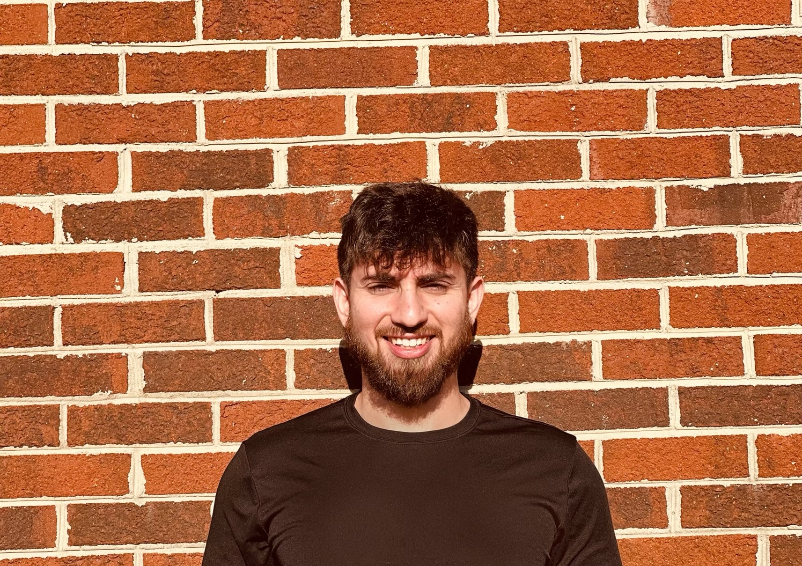

Doctor of Physical Therapy Student
SPT, CSCS
Building a practice rooted in movement optimism, pain science, and the belief that every person can reclaim confidence in their body.

I am a Doctor of Physical Therapy student at Elon University with a deep commitment to changing how people experience pain and movement. My clinical approach integrates modern pain science with Acceptance and Commitment Therapy (ACT) principles, helping patients move past fear-avoidance and build genuine, lasting confidence in their bodies.
With a background spanning strength and conditioning, oncology rehabilitation, fitness leadership, and outpatient orthopedic care, I bring a uniquely holistic perspective to every patient interaction. I am building a practice grounded in movement optimism—one that empowers individuals to take ownership of their health, not just recover from injury, but thrive beyond it.
I believe in framing movement as an opportunity, not a risk. Every patient has the capacity to move well, and my role is to help them rediscover that truth.
By integrating psychological flexibility into rehabilitation, I help patients address the fear, avoidance, and identity shifts that often accompany pain and injury.
From pain neuroscience education to psychosocial screening with the OSPRO-YF, I ground every clinical decision in the best available evidence.